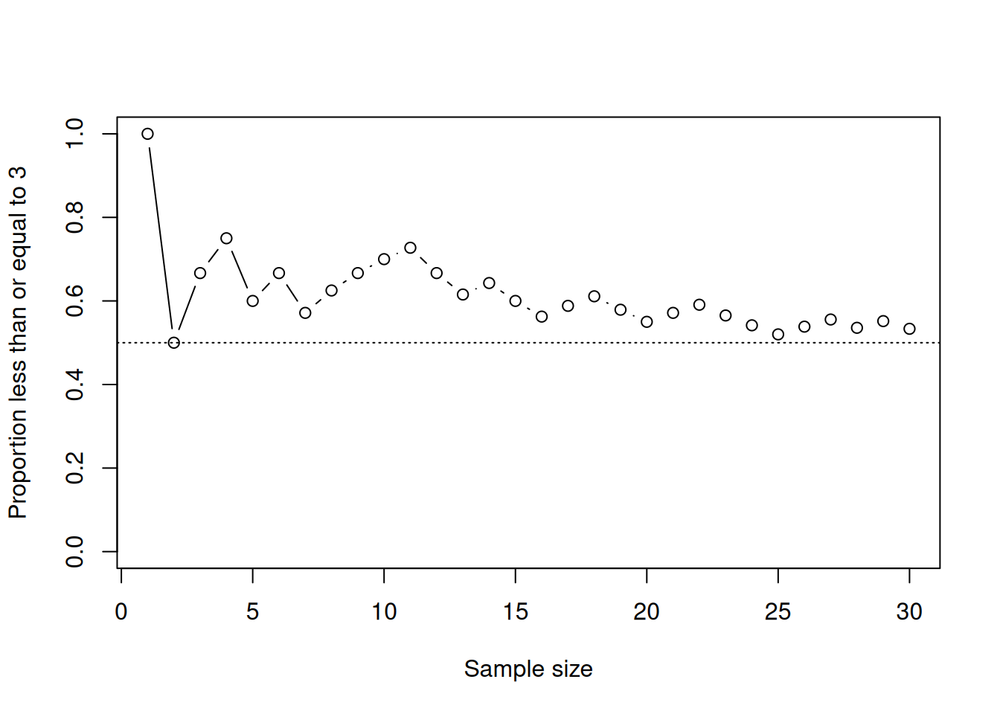

# Code to simulate the experiment of drawing balls at random
# from a bag containing 4 red, 6 green and 3 blue balls.
# First create the variable 'bag', which lists all ball colours:
bag <- c(rep("red", 4), rep("green", 6), rep("blue", 3))
# Draw a ball at random from bag, and assign this to variable 'x':
x <- sample(bag, size = 1)Lab 1: Script files and simulation
This tutorial was created by Gustav Delius for the University of York and is released under a Creative Commons Attribution-ShareAlike 3.0 Unported license; it was subsequently extended by Stephen Connor.
This lab has three goals:
to show you how to use R to do longer calculations using R script files;
to give you practice with using variables in R code;
to illustrate how we can use R to simulate random samples, and use these to empirically solve probability problems.
Especially the use of variables can be confusing, because, as the name “variable” indicates, the value of a variable can change over time.
I assume that you have already worked carefully through the previous lab so that you know how to open RStudio and execute some R commands. Again I would recommend that while working through this lab you keep this pdf file open on one half of your screen and RStudio on the other half. So now go ahead and open RStudio.
Working with an R script file
In the previous lab you worked directly in the console. For this lab you will be working in an R script file. An R script file is simply a text file that contains the commands that you want R to execute. The advantage of typing the R commands into the script file and executing them from there rather than typing them straight into the console is that in the script file you can lay out your calculations in an understandable way and you can revisit your calculations easily later to build on them or to share them with others.
The first step is to create a new R script file. To do that you click on the left-most icon on the toolbar at the top of the RStudio window, the one that looks like a piece of paper with a plus sign . That opens a drop-down menu. The top entry is R script and is the one you want to select. This will open an editor panel above your console with a new empty text file. That is where you will type in the R commands for this lab.
For a first example of using a script file, let’s use R to simulate the experiment of drawing a ball at random from a bag containing 4 red, 6 green and 3 blue balls. (We’ll look further into the idea of simulation later on in this lab; for now, just follow the instructions to get familiar with using a script file.)
- We can use the
rep()function to create a vector with repeated entries. For examplerep("red", 4). - We can use the
c()function to concatenate several vectors. - We can use the
sample()function to choose a random element from a vector.
Let’s combine these commands to create our bag; we will store this in a variable, that we choose to call bag, so that we can use it in what follows. We can also sample from the bag, and save the outcome in the variable x. Copy the following code into your script file:
Tip
Save the R script file frequently by clicking on the floppy disk icon on the toolbar. The first time you save the document you will be prompted to choose a file name and location:
- use an informative file name: don’t just name it after yourself – you’ll be creating lots of script files during this module, and in your future studies! A good name for this script might be
IPS_lab1.R, or similar. (Note that R script files always have file extension.R.) - if you are on a campus PC and save the document to your
H:drive then you will be able to access it from any other campus PC or even from your home PC. For details see this IT Services page.
Now let’s look at the code that you’ve just pasted into your script file. There are a few important things to notice here.
- Notice the
<-syntax for assigning a value to a variable. We will make a lot of use of that in the future. Many other programming languages use the syntax=. - Everything after a hash symbol
#is ignored by R, so the hash symbol is used to start comments that explain your R code. Commenting your code is a VERY good idea. When you come back to look at your code again later you will be very glad that you left comments documenting what you were thinking when you originally wrote the code. - You probably also noticed the way I used extra spaces to align the code across the lines. Those spaces have no function, other than making the code more readable.
So far you have only put the code into your R script file – R has not yet evaluated the code. For that you should click somewhere in the first line of your code and then click the Run icon on the tool bar or, alternatively, hold down the Ctrl key and hit Enter. Either method will send that line of code to the R console and run it. (Notice that R skips the first few lines of comments, and only evaluates the line beginning bag.) It will also move the cursor to the next line, so that you can then execute the second line by again clicking Run or pressing Ctrl-Enter. Each time you send one of the commands to the console you should see a new variable appear in the Environment panel.
Tip
Instead of sending one line of code to the console at a time, you can also highlight multiple lines in the editor and hit Run just once.
Now let’s suppose that we actually wanted to draw not one, but 100 balls from the bag (replacing the ball that we’ve withdrawn each time). We can just go back to our script and edit the final line (and its comment!) as follows:
# Draw 100 balls at random from bag, and assign this to variable 'x':
x <- sample(bag, size = 100, replace = TRUE)Suppose that we want to calculate the frequencies with which we see each colour. Here’s one possibility for calculating the proportion of red balls:
# Calculate proportion of red balls in x:
red_prop <- sum(x == "red") / 100A more direct route is to use R’s built-in function table(). This calculates counts of each distinct element in x; we can then divide by the number of draws to obtain the proportions.
Note that I’ve used length(x) to calculate the number of elements in x: here we know that’s 100, but writing it this way means that if I want to go back and change the number of samples, I don’t have to remember to also change that number when calculating the proportions.
Note
You can download my R script file for all of the above here, and compare it to yours.
Simulation
We all have the intuitive idea that if we make many independent repetitions of a probability experiment, then the long run frequencies of events will be similar to their probabilities. This is indeed true, and we will investigate this formally in the lectures later when we prove the Law of large numbers. This means that one way to perform some of the more complicated probability calculations would be to just re-run the experiment many times to determine the frequencies of events. This is often known as the Monte Carlo method.
Making many independent repetitions of a probability experiment is tedious. It takes a long time to throw a die 100,000 times. So we will instead ask the computer to simulate the experiments, as we did above with the simple example of drawing balls from a bag.
In this document I am not only showing R commands that I want you to use, but I also show the output of those commands, preceded by #>, as well as the figures produced by plots. I nevertheless strongly recommend that you also evaluate the commands yourself and reproduce those outputs.
Simulating random samples
The first question we need to address is how to generate random numbers; this is a difficult problem, but one that has been extensively studied.
One way to generate random numbers would be to have an actual physical device in the computer that performs repeated measurements of some physical quantity whose distribution is well known. For example it is known that the arrival times of radioactive particles measured in a Geiger counter is exponentially distributed. (We’ll meet the exponential distribution later in this course.)
An alternative and more convenient way to generate random numbers is to use a computer algorithm to produce a sequence of numbers that, while not truly random, is practically indistinguishable from a sequence of random numbers. They are not truly random numbers because if the same algorithm is run again with the same initial condition, it will produce the same sequence again. This initial condition is called the seed for the random number generator.
Most computer languages have good random number generators built in. This is of course particularly true for R. In fact, it has a whole range of different algorithms for generating random numbers. By default it uses the Mersenne-Twister algorithm.
There are functions in R to create samples from all of the common discrete and continuous probability distributions that we’ll meet later on in this module, and it is also possible to specify your own distribution and sample from that. We will see examples of that later in this lab.
First we want to simulate a die. So we want to draw from the sample space \(\{1,2,3,4,5,6\}\) with equal probability. A quick way to generate the set of integers \(\{m,m+1,m+2,\dots,n-1,n\}\) in R is to use the command m:n. So with \(m=1\) and \(n=6\) we can obtain our sample space by typing
1:6
#> [1] 1 2 3 4 5 6
Note
We could also have used the very useful function seq() to do this job for us. Take a look at its documentation to see some examples of how it can be used.
Now that we have our sample space, we can use the sample function, as we saw above. The following produces a sample of size 30:
sample(1:6, 30, replace = TRUE)
#> [1] 5 4 5 4 2 1 5 3 5 3 3 1 4 4 2 2 3 4 1 1 3 1 6 6 1 5 1 2 4 2Go ahead and put this command into a new R script file and send the command to the console repeatedly. A different random sample is produced each time.
Tip
A convenient way to send a chunk of code to the console repeatedly is to use the Re-run previous code section button, right next to the Run button.
Now try
and notice that each time you reset the seed to 42 you get the same sequence of pseudo random numbers. Try changing the seed to a different number and see that that produces a different sample. If you want to repeat the same sample, you have to set the seed to the same value right before creating the sample, because each time you generate a random number the seed changes.
Whenever a lab introduces a new function, like sample() above, I recommend that you take a look at the help page for that function. To find the help for the function, you can
- type the function name into the console or the script file editor and then hit the F1 key;
- or click on the function, if it appears in R code in one of these labs and is underlined.
Doing the first of these will open the help page in the Help tab in the frame on the lower right of the RStudio window; the second will take you to the online documentation page. The help page first gives a brief description of the function, then sample usage, then explains the arguments that the function can take, then provides more detailed explanations and finally, at the bottom, provides examples. I usually do not read all the details, but I have a look at the list of arguments and at some of the examples.
I strongly recommend that, in order to get a feel for the new function you just learned about, you start playing with it a bit by using it with different arguments. So for example you might try
to create a sample of 10 coin flips. Or
to draw two balls at random (without replacement) out of a bag containing three red and two blue balls. Experimentation is the best way to get friendly with the computer.
The following code sets the seed, sets the sample size to 30, creates a random sample, assigns it to the variable x, tables the frequency of each value, and then makes a barplot of the result.
Note
As always, you should be adding each line of code to your script file, so that you can easily re-run it later if necessary. Add your own comments to remind you what each chunk of code does!
Estimating probabilities from a random sample
Next let’s estimate probabilities of various events by counting how frequently they occur in the sample.
Let’s start by calculating the probability of the event that the die shows a number less or equal to 3. So our sample space is \(\Omega = \{1,2,3,4,5,6\}\), and our event of interest is \(E=\{1,2,3\}\): we want to estimate \(\mathbb{P}\left(E\right)\). We will use a trick that you met already in the first lab when you counted how many years had more newborn boys than girls. We create a vector of 0s and 1s in which a 1 in a particular place indicates that the event has taken place in that particular repetition of the experiment:
y <- as.numeric(x <= 3); y
#> [1] 1 0 1 1 0 1 0 1 1 1 1 0 0 1 0 0 1 1 0 0 1 1 0 0 0 1 1 0 1 0Then we calculate the proportion of repetitions for which the event has taken place by summing over all entries in the vector (hence counting the 1s) and then dividing by the size of the sample:
sum(y)/n
#> [1] 0.5333333This gives the best approximation to the probability \(\mathbb{P}\left(E\right)\) that we can obtain from this sample. It is close to but not exactly equal to the theoretical value of 0.5.
We can make a plot that shows how the approximation to the probability behaves as the sample size grows:
yn <- cumsum(y)/(1:n)
plot(yn, type = "b", ylim = c(0,1),
xlab = "Sample size", ylab = "Proportion less than or equal to 3")
abline(h = 1/2, lty = "dotted")
This shows that while the values in the random sample keep fluctuating, the estimate of the probability settles down towards its true value as the sample size increases.
The first line of the code above produces a vector of values whose ith entry is the proportion of 1s in the first i values in the vector y. It then assigns this vector of proportions to the variable yn. You do not have to understand the command in detail, unless you want to.
The second line produces the plot of the values, where we have asked R to show both the points and the straight lines joining them, and to limit the range of the y-axis to the interval (0,1). We’ve also added more informative labels to the axes.
Finally, the last line abline(h = 1/2, lty = "dotted") draws a dotted horizontal line at the height 0.5 to indicate the theoretical answer to \(\mathbb{P}\left(E\right)\).
Now play around by producing similar plots for larger sample size.
We can similarly calculate the probability that the die shows a six with
y <- as.numeric(x == 6); y
#> [1] 0 0 0 0 0 0 1 0 0 0 0 0 0 0 1 1 0 0 0 0 0 0 1 0 0 0 0 1 0 0
sum(y)/n
#> [1] 0.1666667The correct value of course is \(1/6\approx 0.167\). We see that the sample is really too small to give a reliable estimate of the probability of obtaining a six. So we redo this with a larger sample of size 1,000:
n <- 1000
set.seed(1)
x <- sample(1:6, n, replace=TRUE)
y <- as.numeric(x == 6)
sum(y)/n
#> [1] 0.164The following code performs the calculation of the estimated probability for all values from 1 to 6 and plots them in a bar plot.
Better, but still not a very good approximation to the theoretical answer. This illustrates that one needs very large sample sizes to get reliable results. Repeat this with larger samples to see how the estimates improve.
We can also use our sample to approximate the probability of more complicated events. For example, suppose that we wish to consider the event that the outcome of a fair die roll is a 2 or a 3. That is, we want to estimate \(\mathbb{P}\left(\{2,3\}\right)\). We can do this by counting the numbers of 2s and 3s in our sample
sum(x == 2 | x ==3)
#> [1] 316Note that we’ve used the symbol | to mean or. So sum(x == 2 | x ==3) counts how many entries in x are equal to 2 or equal to 3. Similarly, we can use the symbol != to mean not equal, and the symbol & to mean and. So
sum(x > 1 & x < 4)
#> [1] 316is another way of counting the number of 2s and 3s, while
sum(x != 5)
#> [1] 824counts the number of outcomes in x that are not equal to 5.
Another probability problem
Simulation provides a lazy way of “solving” probability problems. Take for example the following problem.
A shop receives a batch of 1,000 cheap lamps. The chance that any given lamp is defective is 0.1%. What is the probability that there are more than two defective lamps in the batch?
We can easily simulate a batch of 1,000 cheap lamps. Let us represent a defective lamp by 1 and a working lamp by 0.
set.seed(0)
lamps <- sample(c(0, 1), 1000, replace = TRUE, prob = c(0.999, 0.001))
lamps
#> [1] 0 0 0 0 0 0 0 0 0 0 0 0 0 0 0 0 0 0 0 0 0 0 0 0 0 0 0 0 0 0 0 0 0 0 0 0 0
#> [38] 0 0 0 0 0 0 0 0 0 0 0 0 0 0 0 0 0 0 0 0 0 0 0 0 0 0 0 0 0 0 0 0 0 0 0 0 0
#> [75] 0 0 0 0 0 0 0 0 0 0 0 0 0 0 0 0 0 0 0 0 0 0 0 0 0 0 0 0 0 0 0 0 0 0 0 0 0
#> [112] 0 0 0 0 0 0 0 0 0 0 0 0 0 0 0 0 0 0 0 0 0 0 0 0 0 0 0 0 0 0 0 0 0 0 0 0 0
#> [149] 0 0 0 0 0 0 0 0 0 0 0 0 0 0 0 0 0 0 0 0 0 0 0 0 0 0 0 0 0 0 0 0 0 0 0 0 0
#> [186] 0 0 0 0 0 0 0 0 0 0 0 0 0 0 0 0 0 0 0 0 0 0 0 0 0 0 0 0 0 0 0 0 0 0 0 0 0
#> [223] 0 0 0 0 0 0 0 0 0 0 0 0 0 0 0 0 0 0 0 0 0 0 0 0 0 0 0 0 0 0 0 0 0 0 0 0 0
#> [260] 0 0 0 0 0 0 0 0 0 0 0 0 0 0 0 0 0 0 0 0 0 0 0 0 0 0 0 0 0 0 0 0 0 0 0 0 0
#> [297] 0 0 0 0 0 0 0 0 0 0 0 0 0 0 0 0 0 0 0 0 0 0 0 0 0 0 0 0 0 0 0 0 0 0 0 0 0
#> [334] 0 0 0 0 0 0 0 0 0 0 0 0 0 0 0 0 0 0 0 0 0 0 0 0 0 0 0 0 0 0 0 0 0 0 0 0 0
#> [371] 0 0 0 0 0 0 0 0 0 0 0 0 0 0 0 0 0 0 0 0 0 0 0 0 0 0 0 0 0 0 0 0 0 0 0 0 0
#> [408] 0 0 0 0 0 0 0 0 0 0 0 0 0 0 0 0 0 0 0 0 0 0 0 0 0 0 0 0 0 0 0 0 0 0 0 0 0
#> [445] 0 0 0 0 0 0 0 0 0 0 0 0 0 0 0 0 0 0 0 0 0 0 0 0 0 0 0 0 0 0 0 0 0 0 0 0 0
#> [482] 0 0 0 0 0 0 0 0 0 0 0 0 0 0 0 0 0 0 0 0 0 0 0 0 0 0 0 0 0 0 0 0 0 0 0 0 0
#> [519] 0 0 0 0 0 0 0 0 0 0 0 0 0 0 0 0 0 0 0 0 0 0 0 0 0 0 0 0 0 0 0 0 0 0 0 0 0
#> [556] 0 0 0 0 0 0 0 0 0 0 0 0 0 0 0 0 0 0 0 0 0 0 0 0 0 0 0 0 0 0 0 0 0 0 0 0 0
#> [593] 0 0 0 0 0 0 0 0 0 0 0 0 0 0 0 0 0 0 0 0 0 0 0 0 0 0 0 0 0 0 0 0 0 0 0 0 0
#> [630] 0 0 0 0 0 0 0 0 0 0 0 0 0 0 0 0 0 0 0 0 0 0 0 0 0 0 0 0 0 0 0 0 0 0 0 0 0
#> [667] 0 0 0 0 0 0 0 0 0 0 0 0 0 0 0 0 0 0 0 0 0 0 0 0 0 0 0 0 0 0 0 0 0 0 0 0 0
#> [704] 0 0 0 0 0 0 0 0 0 0 0 0 0 0 0 0 0 0 0 0 0 0 0 0 0 0 0 0 0 0 0 0 0 0 0 0 0
#> [741] 0 0 0 0 0 0 0 0 0 0 0 0 0 0 0 0 0 0 0 0 0 0 0 0 0 0 0 0 0 0 0 0 0 0 0 0 0
#> [778] 0 0 0 1 0 0 0 0 0 0 0 0 0 0 0 0 0 0 0 0 0 0 0 0 0 0 0 0 0 0 0 0 0 0 0 0 0
#> [815] 0 0 0 0 0 0 0 0 0 0 0 0 0 0 0 0 0 0 0 0 0 0 0 0 0 0 0 0 0 0 0 0 0 0 0 0 0
#> [852] 0 0 0 0 0 0 0 0 0 0 0 0 0 0 0 0 0 0 0 0 0 0 0 0 0 0 0 0 0 0 0 0 0 0 0 0 0
#> [889] 0 0 0 0 0 0 0 0 0 0 0 0 0 0 0 0 0 0 0 0 0 0 0 0 0 0 0 0 0 0 0 0 0 0 0 0 0
#> [926] 0 0 0 0 0 0 0 0 0 0 0 0 0 0 0 0 0 0 0 0 0 0 0 0 0 0 0 0 0 0 0 0 0 0 0 0 0
#> [963] 0 0 0 0 0 0 0 0 0 0 0 0 0 0 0 0 0 0 0 0 0 0 0 0 0 0 0 1 0 0 0 0 0 0 0 0 0
#> [1000] 0We can then count how many defective lamps are in that batch.
sum(lamps)
#> [1] 2There were 2 defective lamps in that sample. Now, without resetting the seed, we take another sample to represent another random batch of lamps and again count the defective lamps.
0 in this batch. Let’s try another
The replicate() function allows us to repeat this a chosen number of times and collect the results into a vector.
So no batch with more than 2 defective lamps in the first 20 batches. Now we will simulate 100,000 batches and then count the number of batches with more than 2 defective lamps.
We can use this to estimate the probability of getting more than two defective lamps in a batch by dividing this by the total number of batches
sum(count_defective > 2) / 100000
#> [1] 0.08022
What answer should we expect here?
If \(X\) is the number of defective lamps in a batch of size 1,000, then you may already know that \(X\) will follow a binomial distribution with parameters 1,000 and 0.001: \(X\sim\mbox{\textup{Bin}}(1000,0.001)\). (Don’t worry if this doesn’t mean anything to you: we’ll be learning about this properly later in the course!)
We can write
\[\mathbb{P}\left(X>2\right) = 1-\mathbb{P}\left(X=0\right)-\mathbb{P}\left(X=1\right)-\mathbb{P}\left(X=2\right)\,. \] So to calculate this we need to be able to evaluate the probability mass function of this binomially distributed random variable. Of course R has a function for this, called dbinom(). So we can calculate the probability that a batch has more than 2 defective lamps as
In fact, R also has a function pbinom() for calculating the distribution function. So we could also have calculated \(\mathbb{P}\left(X>2\right) = 1- \mathbb{P}\left(X\le 2\right)\) with
1 - pbinom(2, 1000, 0.001)
#> [1] 0.08020934Of course in this example it was faster to solve the problem by using the binomial distribution instead of by simulation, but there are many real-world probability problems that can not be solved analytically and for which simulation is the only viable approach.